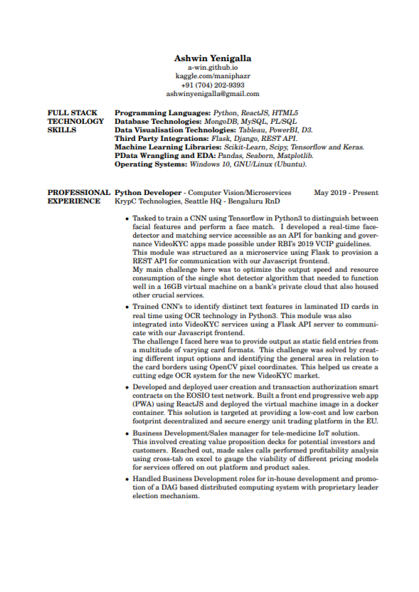
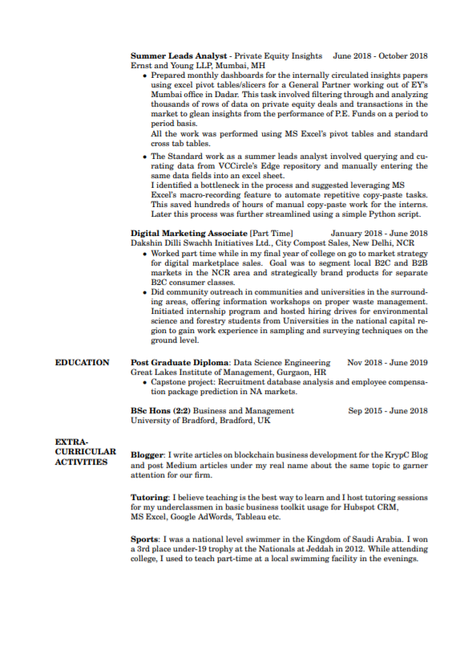

Resume below
To start my career as a data scientist, I acquired a post graduate diploma in data science and engineering from the Great Lakes Institute of Management in Chennai. Then started working as a BizDev manager in KrypC Technologies, the blockchain services company I now consider to be my second family. Eventually started working with the core product development and innovations team on a computer vision module for face recognition, which I ended up building myself. I've also designed an OCR tool as a microservice and made both of these services available using a flask API.
These are the experiences that encouraged me to pursue full stack development as a career.

